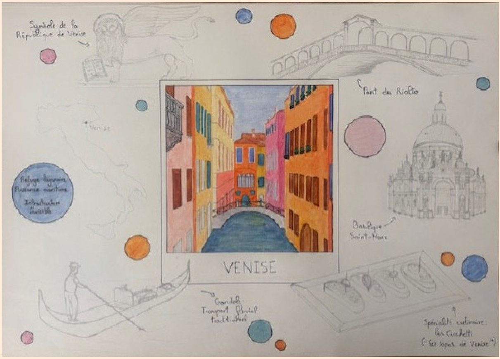
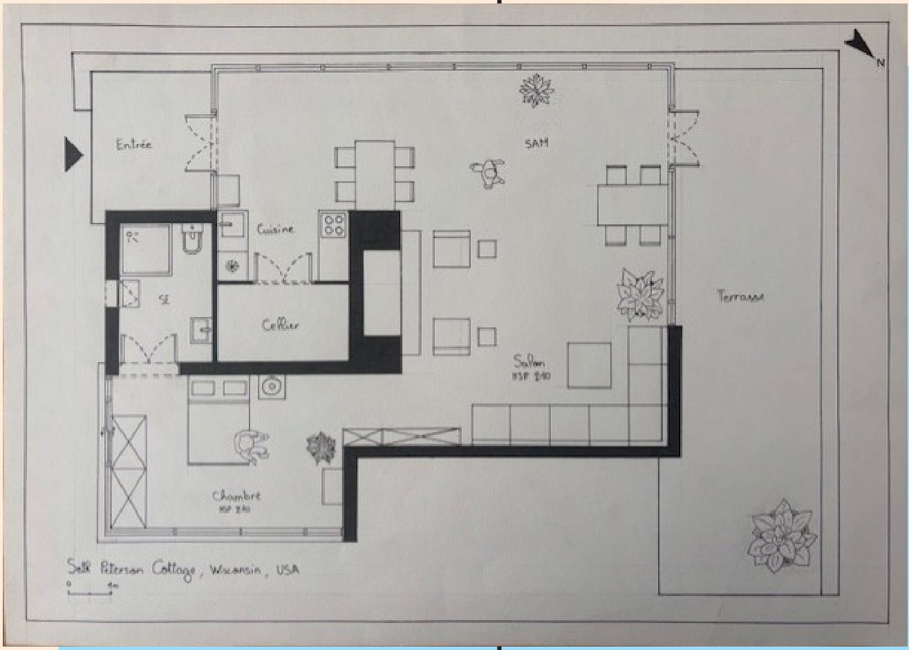
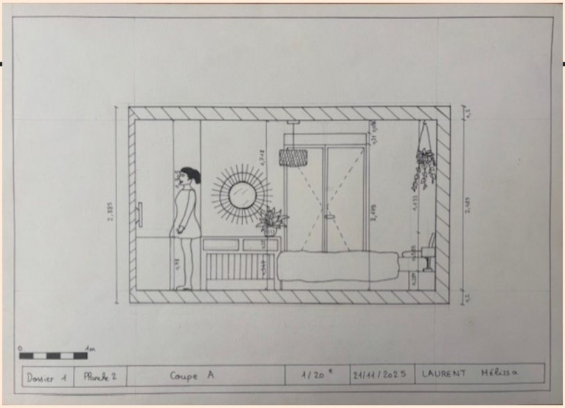
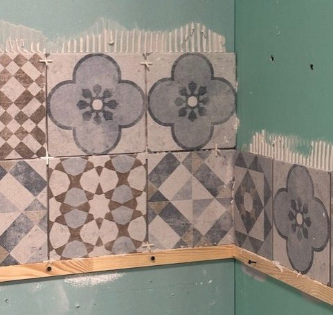
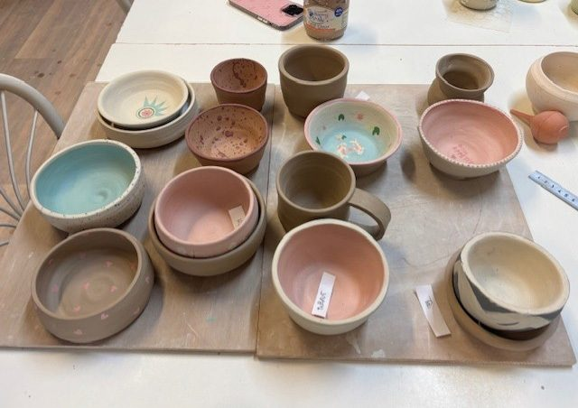

03Projets
Ce que j'ai conçu
Projets d'école, maquettes, dessins à la main et ateliers de ma première année à Ynov. Cliquez sur une image pour voir toutes les planches.

⭐ Projet de B1 · Ynov 2025/2026
Projet Habitat — Rénovation d'un appartement-hôtel
Conception d'un aménagement intérieur à partir d'un relevé existant. Après le relevé sur site et l'échange avec le client sur le cahier des charges, j'ai réalisé les plans de l'existant pour le dossier d'état des lieux. Avec ma binôme, nous avons imaginé un concept lune / soleil pour garder une même ligne directrice dans tout l'appartement, puis produit plans, coupes aménagées, moodboards par pièce et perspectives pour la présentation client.
AutoCADPhotoshopInDesignRelevéPlans EDECoupes texturéesMoodboards
- Coupe texturée (AutoCAD + Photoshop)
- Coupe texturée (AutoCAD + Photoshop)
- Plan aménagé (AutoCAD)
- Plan de l'existant coté (AutoCAD)
- Coupe aménagée cotée (AutoCAD)
- Coupe aménagée cotée (AutoCAD)
- Moodboard chambre — épuré, apaisant (InDesign)
- Moodboard salon — bois, béton, équilibre (InDesign)
- Perspective de la chambre, à la main
- Perspective de la cuisine, à la main


Projet ERP — Open-space pour Adopt
Rénovation de bureaux en open-space adapté à l'entreprise de notre choix. Avec ma binôme, nous avons choisi la marque de parfums Adopt et le concept du colibri, lié à son logo : moodboard concept, maquettes concept d'un paravent et d'un plafond en voile, puis plans aménagés et coupes cotées.
AutoCADInDesignERPMaquettes conceptConcept


Maquette de détail — Suite d'hôtel
Maquette d'une suite d'hôtel à très grande échelle pour travailler les petits détails d'agencement, les matériaux et les textures. Chaque choix de matériau et de couleur est justifié par la source d'inspiration : le projet Trocadéro de l'architecte Pierre Yovanovitch.
MaquetteGrande échelleMatériauxMoodboard


Maquette d'étude — Volumétrie
Conception d'un espace en volumétrie à partir d'une recherche graphique 2D, en veillant à la faisabilité d'une maquette 3D à partir d'un zoning 2D : aspects structurels, fonctionnels, techniques et esthétiques. J'ai ensuite découpé et assemblé les matériaux pour représenter les volumes et leur articulation (RDC + étage).
MaquetteVolumétrieZoning 2D → 3D


Perspectives à la main
Grilles de perspective à 2 points de fuite et perspectives mises en couleur du projet Habitat : salon, cuisine et chambre, dessinés et colorés à la main.
Dessin à la main2 points de fuiteMise en couleur



Planches design — Un objet, une ville
Deux planches design : l'une sur un objet (une trousse Eastpak), l'autre sur une ville (Venise). Le but : donner envie d'acheter l'objet ou de se rendre dans la ville, en représentant le plus de caractéristiques possible.
Dessin à la mainCrayons de couleurComposition



Seth Peterson Cottage — Plan & façade à la main
Plan aménagé et coupe façade du Seth Peterson Cottage (Wisconsin, États-Unis), maison conçue par Frank Lloyd Wright, entièrement redessinés à la main.
Dessin à la mainPlan aménagéCoupe façade



Dessins techniques d'une chambre
Relevé d'une chambre de ma maison, puis plan et deux coupes à l'échelle (1/20e) avec tous les éléments d'un dessin technique : cartouche, échelle, rose des vents, cotations et personnages.
RelevéÉchelle 1/20CartoucheCotations



À la rencontre des fabricants — Ateliers Leroy Merlin
Ateliers de bricolage de 3 à 4 heures avec des formateurs : ils présentaient d'abord les outils, leur fonctionnement et leurs contraintes, puis je pratiquais. Une façon de me mettre à la place des fabricants et de comprendre les difficultés de chaque métier.
ÉlectricitéParquetCarrelagePeinture



Créations en céramique
Cours de céramique avec une professionnelle du métier : modelage, assemblage, peinture, émaillage et cuisson. Une façon de comprendre les matériaux et d'apprendre au plus près des réalités du métier.
ModelageÉmaillageCuissonMatériaux